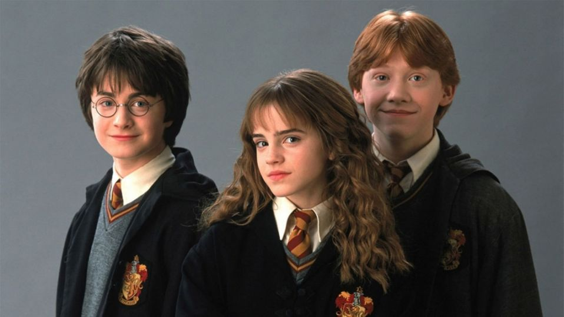

Emma Charlotte Duerre Watson (born 15 April 1990)[3] is an English actress, model, and activist. She has gained recognition for her roles in both blockbusters and independent films, as well as her women's rights work. Watson has been ranked among the world's highest-paid actresses by Forbes and Vanity Fair, and was named one of the 100 most influential people in the world by Time magazine in 2015.[4][5][6]
Born in Paris and raised in Oxfordshire, Watson attended the Dragon School and trained in acting at the Oxford branch of Stagecoach Theatre Arts. As a child, she rose to stardom after landing her first professional acting role as Hermione Granger in the Harry Potter film series, having acted only in school plays previously. Watson also starred in the 2007 television adaptation of the novel Ballet Shoes and lent her voice to The Tale of Despereaux (2008). After the final Harry Potter film, she took on a supporting role in My Week with Marilyn (2011), before starring in The Perks of Being a Wallflower (2012) opposite Logan Lerman and The Bling Ring (2013) alongside an ensemble cast, both to critical acclaim. In 2014, Watson played the titular character's adoptive daughter in the biblical epic Noah and was honoured by the British Academy of Film and Television Arts, winning British Artist of the Year. She starred as Belle in the musical romantic fantasy Beauty and the Beast (2017), which ranks among the highest-grossing films of all time, and Meg March in the coming-of-age drama Little Women (2019), which was nominated for the Academy Award for Best Picture. Other notable film roles include This Is the End (2013), Regression, Colonia (both 2015), and The Circle (2017).

From 2011 to 2014, Watson split her time between working on films and continuing her education, graduating from Brown University with a bachelor's degree in English literature in May 2014. In the same year, she was appointed a UN Women Goodwill ambassador and helped launch the UN Women campaign HeForShe, which advocates for gender equality. Watson was appointed to a G7 advisory body for women's rights in 2019, consulting with leaders on foreign policy. Her modelling work has included campaigns for Burberry and Lancôme. She also lent her name to a line of clothing for sustainable brand People Tree. In 2020, she joined the board of directors of Kering, a luxury brand group, in her capacity as an advocate for sustainable fashion.
Early life and education
Emma Charlotte Duerre Watson was born on 15 April 1990 in Paris, to English lawyers Chris Watson and Jacqueline Luesby.[3][7][8] Watson lived in Maisons-Laffitte near Paris until age five. Her parents divorced when she was young, and Watson moved to England to live with her mother in Oxfordshire while spending weekends at her father's house in London.[3][9] Watson has said she speaks some French, though "not as well" as she used to.[10] After moving to Oxford with her mother and brother, she attended the Dragon School, remaining there until 2003.[3] From age six, she wanted to become an actress,[11] and trained at the Oxford branch of Stagecoach Theatre Arts, a part-time theatre school where she studied singing, dancing, and acting.[12]
By age ten, Watson had performed in Stagecoach productions and school plays including Arthur: The Young Years and The Happy Prince,[13] but she had never acted professionally prior to the Harry Potter series. After the Dragon School, Watson moved on to Headington School, Oxford.[3] While on film sets, she and her castmates were tutored for up to five hours a day.[14] In June 2006, she took GCSE school examinations in ten subjects, achieving eight A* and two A grades. In May 2007, she took AS levels in English, Geography, Art, and History of Art. The following year, she dropped History of Art to pursue the three A levels, receiving an A grade in each subject.[3][15][16]
Career
1999–2003: Beginnings and breakthrough
In 1999, casting began for Harry Potter and the Philosopher's Stone, the film adaptation of British author J. K. Rowling's best-selling novel. Casting agents found Watson through her Oxford theatre teacher, and producers were impressed by her confidence. After eight auditions, producer David Heyman told Watson and fellow applicants Daniel Radcliffe and Rupert Grint that they had been cast in the roles of the school friends Hermione Granger, Harry Potter and Ron Weasley, respectively. Rowling supported Watson from her first screen test.[11]
The release of Harry Potter and the Philosopher's Stone in 2001 was Watson's debut screen performance. The film broke records for opening-day sales and opening-weekend takings and was the highest-grossing film of 2001.[29][30] Critics singled out Watson for particular acclaim; The Daily Telegraph called her performance "admirable",[31] and IGN said she "stole the show".[32] Watson was nominated for five awards for her performance in Philosopher's Stone, winning the Young Artist Award for Leading Young Actress.[33]
2004–2011: Harry Potter and worldwide recognition
In 2004, Harry Potter and the Prisoner of Azkaban was released. Watson was appreciative of the more assertive role Hermione played, calling her "charismatic" and "a fantastic role to play".[37] Critics lauded Watson's performance; A. O. Scott of The New York Times remarked: "Luckily Mr. Radcliffe's blandness is offset by Ms. Watson's spiky impatience. Harry may show off his expanding wizardly skills ... but Hermione ... earns the loudest applause with a decidedly unmagical punch to Draco Malfoy's deserving nose."[38] Although Prisoner of Azkaban proved to be the lowest-grossing Harry Potter film in the entire series, Watson's personal performance won her two Otto Awards and the Child Performance of the Year award from Total Film.[39][40]
With Harry Potter and the Goblet of Fire (2005), both Watson and the Harry Potter film series reached new milestones. The film set records for a Harry Potter opening weekend, a non-May opening weekend in the US, and an opening weekend in the UK. Critics praised the increasing maturity of Watson and her teenage co-stars; The New York Times called her performance "touchingly earnest",[41] and Peter Bradshaw of The Guardian wrote that "Watson's gutsy, confident performance nicely shows that inside and outside the world of magic there is a growing discrepancy between a teenage girl's status and her accelerating emotional and intellectual development."[42] For Watson, much of the film's humour sprang from the tension among the three lead characters as they matured. She said, "I loved all the arguing. ... I think it's much more realistic that they would argue and that there would be problems."[43] Nominated for three awards for Goblet of Fire, Watson won a bronze Otto Award.[44][45] In 2006, Watson played Hermione in The Queen's Handbag, a special mini-episode of Harry Potter in celebration of Queen Elizabeth II's 80th birthday.[46]

The fifth film in the Harry Potter series, Harry Potter and the Order of the Phoenix, was released in 2007. A huge financial success, the film set a record worldwide opening-weekend gross of $332.7 million.[47] Watson won the inaugural National Movie Award for Best Female Performance.[48] As the fame of the actress and the series continued to rise, Watson and her Harry Potter co-stars Daniel Radcliffe and Rupert Grint left imprints of their hands, feet and wands in front of Grauman's Chinese Theatre in Hollywood on 9 July 2007.[49] That month, Watson's work on the Harry Potter series was said to have earned her more than £10 million, and she acknowledged she would never have to work for money again.[50]
Principal photography for the sixth Harry Potter film began in late 2007, with Watson's part being filmed from 18 December to 17 May 2008.[63][64] Harry Potter and the Half-Blood Prince premiered on 15 July 2009,[65] having been delayed from November 2008.[66] With the lead actors in their late teens, critics were increasingly willing to review them on the same level as the rest of the franchise's all-star cast, which the Los Angeles Times described as "a comprehensive guide to contemporary UK acting".[67] The Washington Post felt Watson had given "[her] most charming performance to date",[68] while The Daily Telegraph described the lead actors as "newly liberated and energised, eager to give all they have to what's left of the series".[69]